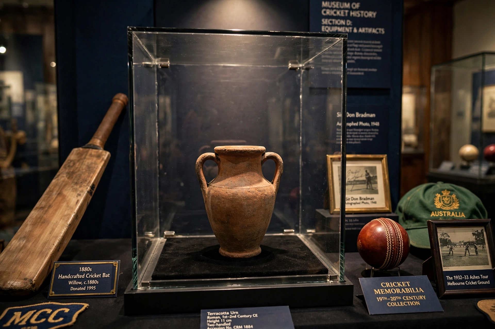

From Wikipedia, the free encyclopedia
| The Ashes | |
|---|---|
 The Ashes urn, a tiny terracotta urn about 11 cm tall, in its display case at Lord's | |
| Countries | Australia vs England |
| First held | 1882–83 |
| Format | Test cricket, 5-match series |
| Frequency | Roughly every 2 years, alternating hosts |
| Current holders | Australia (retained, 2023 drawn series) |
| Series wins | Australia 34, England 32 (drawn series excluded) |
The Ashes is a Test cricket series played biennially between England and Australia. The term originated in a satirical obituary published in The Sporting Times in 1882, after Australia's first Test victory on English soil at The Oval, in which the obituary stated that English cricket had died, and "the body will be cremated and the ashes taken to Australia". The following winter, England captain Ivo Bligh vowed to "recover those ashes", and was presented in Melbourne with a small urn said to contain the ashes of a burnt bail.
The urn itself — about 11 cm tall — is kept permanently at Lord's Cricket Ground in London; the winning captain receives a replica (and, since the 1990s, a Waterford Crystal trophy). Series alternate between the two countries, usually five Tests over about six weeks, at venues such as Lord's, The Oval, Headingley, the MCG and the Gabba.
Legendary Ashes moments include Don Bradman's dominance in the 1930s and the "Bodyline" controversy of 1932–33; "Botham's Ashes" in 1981; Shane Warne's "Ball of the Century" to Mike Gatting at Old Trafford in 1993; the 2005 series, widely considered the greatest ever, which England won 2–1; and Ben Stokes's miraculous match-winning 135 not out at Headingley in 2019. Australia thrashed England 5–0 at home in 2013–14 and 2021–22; the 2023 series in England was drawn 2–2, so Australia retained the urn. The women's Ashes, a multi-format points-based series, has been played since 1934 (in its modern format since 2013).
Categories: The Ashes | Test cricket | Australia–England sports rivalries